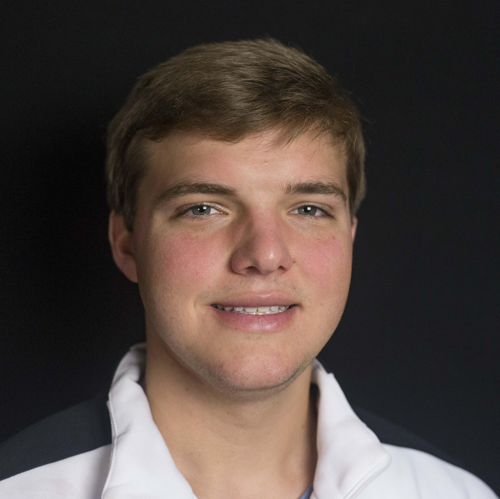

Our Journey

On March 6th, 2015, Zack White was so beyond excited to celebrate his 16th birthday the following day with family and friends. A routine follow-up appointment with the doctor regarding a swollen gland changed everything. Zack spent the next morning, his 16th birthday, at the hospital having CT scans & blood work performed.
On April 10, 2015,at 2:01 pm, his family got the call that no family ever wants to receive. Zack was diagnosed with Hodgkin's Lymphoma, stage two.
He was immediately admitted to the hospital to have surgery to have a port put in and to begin chemo treatments. Over the next few months there were many sleepless nights due to the side effects of the chemotherapy, mouth sores, hair loss, and extreme fatigue.
Throughout it all, his DH Conley family showed their unwavering love and support. There were countless visits, phone calls, texts, and even FaceTime events from the DH Conley student body to Zack, who was homebound and unable to attend school. By summers end, Zack had a complete response to treatment and was in remission.
His hair grew back and his energy level slowly returned. He worked extremely hard to prepare himself for the next year's football season. Then....... the unthinkable happened. On August 12, 2016, Zack's cancer returned. He, along with everyone else, was devastated. He took the news much better than most, until he was told he wouldn't be able to play football.....his senior year, his last chance, he was CRUSHED!
Within hours of the news, his DH Conley family again, started calling, texting, showing up, and praying. The football team presented him with his jersey and assured him that he was still an important part of the team. Zack began treatments immediately. Each time he was in the hospital he had his jersey with him. His only goal was to get out of the hospital and to feel well enough to be on the sidelines on Friday night with his team. When he was able, he attended both home and away games with his team.
His DH Conley family gave him hope, strength, and encouragement in an indescribable way. It is often said that playing a sport or sports helps make a well-rounded child. For Zack White, sports and his DH Conley family are helping save his life!
#vikingstrong
#zhwcrew